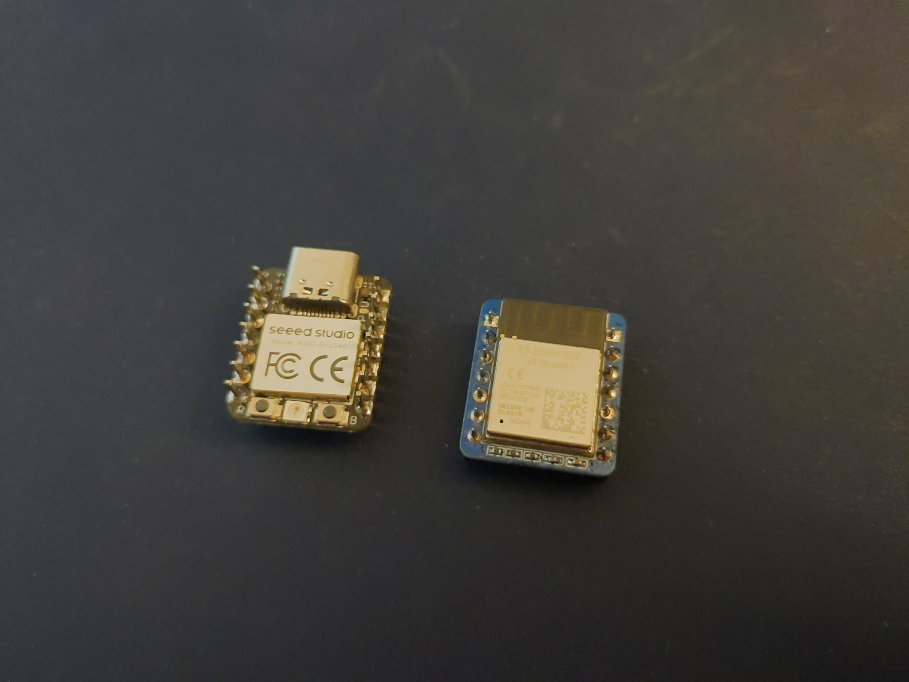

Second prototype¶
Published on 2025-01-15 in BlueJoy.
I actually received the PCBs and assembled and tested the second prototype a while ago, but I never had the time to update the logs. So here it is.
This time it was pretty unexciting. It just works. As you can see on the photo, it’s using the ESP32-MINI-1 module, that is a bit bigger, but also cheaper, since it doesn’t have the extra memory that we don’t need. The programming pads had to go on the bottom of the board, because this module is slightly longer, but that’s not a big problem.
I programmed it and it just works, so that’s it.